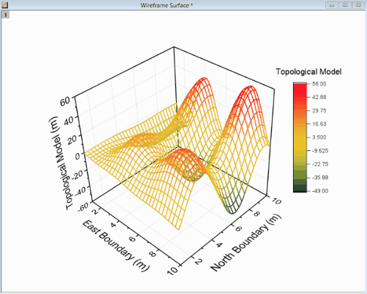

FAQ-174 3Dグラフの軸平面を手動で移動するにはどのようにしたらよいでしょうか？
move-3d-axis-plane
最終更新日：2019/1/8
OpenGLベースの3Dグラフでは、ドラッグアンドドロップにより手動で軸平面の移動を行うことができます。以下のように操作します。
- グラフレイヤをダブルクリックし、作図の詳細（レイヤ属性）を開きます（または、メニューのフォーマット：レイヤを選択します）。
- 平面タブで、移動させたい平面に対する位置ドロップダウンリストから下からの％を選択します。
- OK をクリックして設定を適用し、作図の詳細ダイアログを閉じます。
- グラフレイヤ内でクリックし、フレームコントロールを表示させます。下図の例の場合、すべての軸平面に対して位置の設定を下からの％に変更しているため、すべてのフレーム（緑、青、赤）が表示されています。
- 移動したい平面のフレームをクリックすると、ハイライトし、面に対して垂直な矢印が表示されます。
- 矢印をクリックし、ドラッグして軸平面を移動します。

 |
作図の詳細（レイヤ属性）ダイアログの平面タブで、直接%値を入力することもできます。
|
キーワード: 3D,
軸平面, 平面の位置, 移動, 位置
必要なOriginのバージョン: 9.0 SR0以降